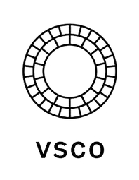

Beranda
Profil
Album
Artikel
Buku Tamu
Kembali
| Aplikasi Pengedit yang aku pakai | |||||
|---|---|---|---|---|---|
Beranda |
Profil |
Album |
Artikel |
Buku Tamu |
|
|
|
Alight Motion adalah aplikasi desain gerak profesional pertama yang tersedia di perangkat seluler, memungkinkan pengguna membuat animasi, grafik gerak, efek visual, pengeditan video, dan komposisi video dengan kualitas profesional. Aplikasi ini menyediakan dukungan vektor dan bitmap, antarmuka multi-layer, serta berbagai fitur seperti kustomisasi teks dan lebih dari seratus efek visual untuk membuat konten animasi yang halus dan hasil suntingan profesional di mana saja. | ||||
|
|
CapCut adalah aplikasi dan platform penyuntingan video yang dikembangkan oleh Bytedance, perusahaan di balik TikTok. Aplikasi ini dirancang untuk memudahkan pengguna membuat konten video dengan menyediakan berbagai fitur seperti template, efek, filter, transisi, dan alat dasar pengeditan. CapCut populer di kalangan pembuat konten untuk platform seperti TikTok, YouTube, dan lainnya karena mudah digunakan, bahkan bagi pemula. | ||||
|  | VSCO adalah sebuah perusahaan teknologi dan aplikasi editor foto serta video untuk perangkat seluler dan desktop, yang memungkinkan pengguna untuk mengedit foto dengan filter estetis, berbagi karya mereka di dalam komunitas, serta menyimpan resep editing untuk menjaga konsistensi tampilan. Nama VSCO merupakan singkatan dari Visual Supply Company, yang awalnya didirikan untuk menyediakan sumber daya bagi para fotografer sebelum akhirnya meluncurkan aplikasi yang populer di tahun 2011. | ||||
| Node Video adalah aplikasi editor video profesional untuk perangkat seluler yang dikembangkan oleh Shallway Studio. Aplikasi ini menawarkan fitur-fitur canggih seperti lapisan tanpa batas, alat pengeditan presisi, animasi keyframe, efek bertenaga AI, dan rendering 3D, memungkinkan pengguna membuat video yang kompleks dan kreatif. | |||||
|
Kembali |
|||||